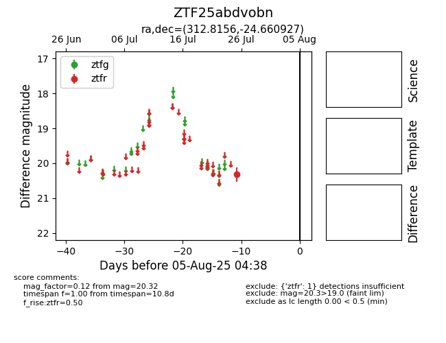

Target ZTF25abdvobn at 2025-08-05 04:38, see:
FINK: fink-portal.org/ZTF25abdvobn
Lasair: lasair-ztf.lsst.ac.uk/objects/ZTF25abdvobn
ALeRCE: alerce.online/object/ZTF25abdvobn
alt names
ZTF25abdvobn (ztf,fink)
coordinates:
equatorial (ra, dec) = (312.8156,-24.66093)
galactic (l, b) = (21.1369,-36.45055)
photometry
last ztfr=20.32
1 ztfr detections
